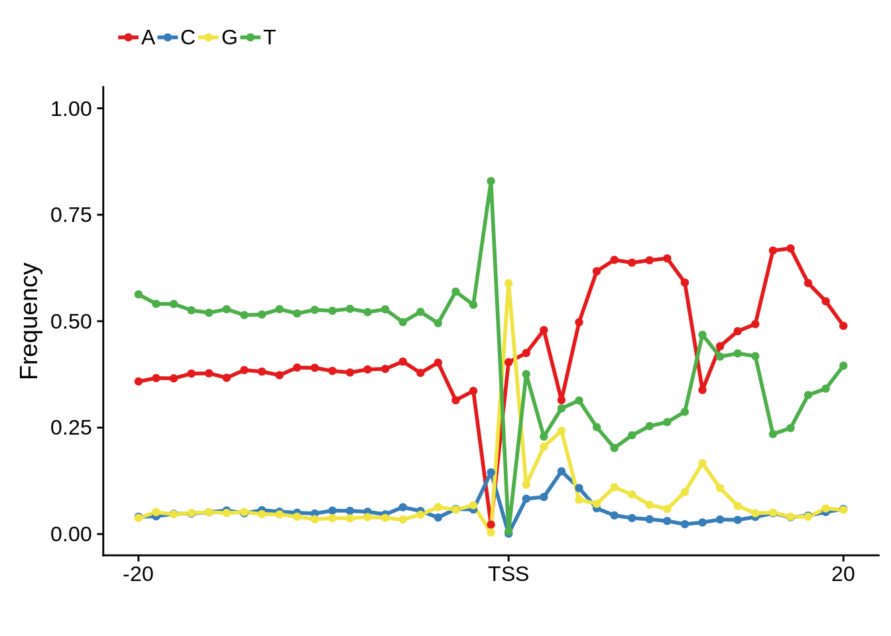
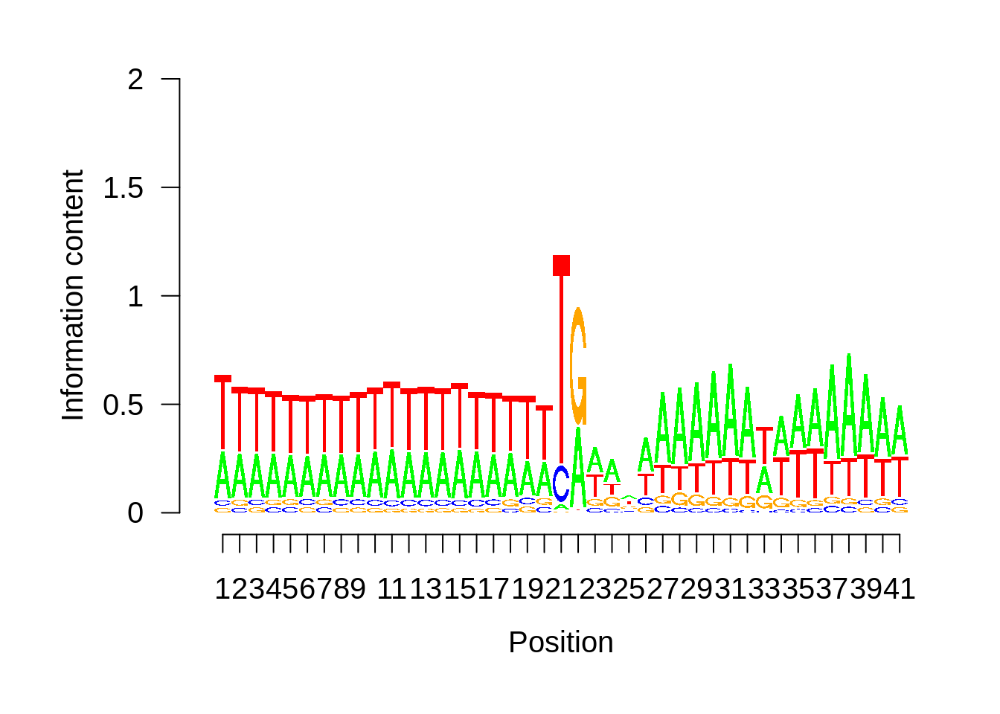

Promoter Architecture
Philipp Ross
09-25-2018
Last updated: 2018-11-20
workflowr checks: (Click a bullet for more information)-
✖ R Markdown file: uncommitted changes
The R Markdown file has unstaged changes. To know which version of the R Markdown file created these results, you’ll want to first commit it to the Git repo. If you’re still working on the analysis, you can ignore this warning. When you’re finished, you can runwflow_publishto commit the R Markdown file and build the HTML. -
✔ Environment: empty
Great job! The global environment was empty. Objects defined in the global environment can affect the analysis in your R Markdown file in unknown ways. For reproduciblity it’s best to always run the code in an empty environment.
-
✔ Seed:
set.seed(12345)The command
set.seed(12345)was run prior to running the code in the R Markdown file. Setting a seed ensures that any results that rely on randomness, e.g. subsampling or permutations, are reproducible. -
✔ Session information: recorded
Great job! Recording the operating system, R version, and package versions is critical for reproducibility.
-
Great! You are using Git for version control. Tracking code development and connecting the code version to the results is critical for reproducibility. The version displayed above was the version of the Git repository at the time these results were generated.✔ Repository version: dd9d56a
Note that you need to be careful to ensure that all relevant files for the analysis have been committed to Git prior to generating the results (you can usewflow_publishorwflow_git_commit). workflowr only checks the R Markdown file, but you know if there are other scripts or data files that it depends on. Below is the status of the Git repository when the results were generated:
Note that any generated files, e.g. HTML, png, CSS, etc., are not included in this status report because it is ok for generated content to have uncommitted changes.Ignored files: Ignored: .Rhistory Ignored: .Rproj.user/ Ignored: analysis/.DS_Store Ignored: analysis/.httr-oauth Ignored: code/.DS_Store Ignored: code/differential_expression/ Ignored: code/differential_phase/ Ignored: data/ Ignored: docs/.DS_Store Ignored: docs/figure/.DS_Store Ignored: docs/figure/neighboring_genes.Rmd/.DS_Store Ignored: output/compare/ Ignored: output/ctss_clustering/ Ignored: output/differential_detection/ Ignored: output/differential_expression/ Ignored: output/differential_phase/ Ignored: output/extensive_transcription/ Ignored: output/final_utrs/ Ignored: output/gcbias/ Ignored: output/homopolymer_analysis/ Ignored: output/neighboring_genes/ Ignored: output/promoter_architecture/ Ignored: output/tfbs_analysis/ Ignored: output/transcript_abundance/ Untracked files: Untracked: _workflowr.yml Untracked: docs/figure/tfbs_analysis.Rmd/ Untracked: figures/ Unstaged changes: Modified: README.md Modified: analysis/_site.yml Modified: analysis/about.Rmd Modified: analysis/analyze_neighboring_genes.Rmd Modified: analysis/array_correlations.Rmd Modified: analysis/calculate_transcript_abundance.Rmd Deleted: analysis/chunks.R Modified: analysis/comparing_utrs.Rmd Modified: analysis/ctss_clustering.Rmd Modified: analysis/dynamic_tss.Rmd Modified: analysis/extensive_transcription.Rmd Modified: analysis/final_utrs.Rmd Modified: analysis/gcbias.Rmd Modified: analysis/index.Rmd Modified: analysis/license.Rmd Modified: analysis/process_neighboring_genes.Rmd Modified: analysis/promoter_architecture.Rmd Modified: analysis/strain_differential_detection.Rmd Modified: analysis/strain_differential_expression.Rmd Modified: analysis/strain_differential_phase.Rmd Modified: analysis/tfbs_analysis.Rmd Modified: code/differential_detection/detect_transcripts.R Modified: code/figures.R Deleted: docs/Rplots.pdf
Expand here to see past versions:
Sequence features surrounding transcription start sites
For this analysis we want to plot nucleotide frequencies up and downstream of predicted TSSs. We can do this by looking at most commonly used TSSs, tag clusters, and promoter clusters.
First we’ll import all the data:
# import genome
library(BSgenome.Pfalciparum.PlasmoDB.v24)
# import tag clusters
tc_intergenic <- rtracklayer::import.gff3("../output/ctss_clustering/modified/tag_clusters_annotated_intergenic.gff")
tc_exonic <- rtracklayer::import.gff3("../output/ctss_clustering/modified/tag_clusters_annotated_exons.gff")
tc_intronic <- rtracklayer::import.gff3("../output/ctss_clustering/modified/tag_clusters_annotated_introns.gff")
# import promoter clusters
pc_intergenic <- rtracklayer::import.gff3("../output/ctss_clustering/modified/promoter_clusters_annotated_intergenic.gff")
pc_exonic <- rtracklayer::import.gff3("../output/ctss_clustering/modified/promoter_clusters_annotated_exons.gff")
pc_intronic <- rtracklayer::import.gff3("../output/ctss_clustering/modified/promoter_clusters_annotated_introns.gff")
# import telomere ranges
telomeres <- rtracklayer::import.gff3("../data/annotations/Pf3D7_v3_subtelomeres.gff")
# import genes as well
genes <- rtracklayer::import.gff3("../data/annotations/genes_nuclear_3D7_v24.gff")
distance_to_add <- 500
# original TSO-predicted TSSs
x3d7_tso <- rtracklayer::import.gff3("../data/utrs/original_utrs/tso_thr5.gff") %>%
tibble::as_tibble() %>%
dplyr::mutate(newend=ifelse(strand=="+",start+distance_to_add,end+distance_to_add),
newstart=ifelse(strand=="+",start-distance_to_add,end-distance_to_add)) %>%
dplyr::select(-start,-end) %>%
dplyr::rename(start=newstart,end=newend) %>%
dplyr::filter(type=="5UTR") %>%
GenomicRanges::GRanges()
# import most heavily used TSSs
x3d7_tss <- rtracklayer::import.gff3("../output/final_utrs/final_utrs_3d7.gff") %>%
tibble::as_tibble() %>%
dplyr::mutate(newend=ifelse(strand=="+",start+distance_to_add,end+distance_to_add),
newstart=ifelse(strand=="+",start-distance_to_add,end-distance_to_add)) %>%
dplyr::select(-start,-end) %>%
dplyr::rename(start=newstart,end=newend) %>%
dplyr::filter(type=="5UTR") %>%
GenomicRanges::GRanges()
# import TTS for 3D7
x3d7_tts <- rtracklayer::import.gff3("../output/final_utrs/final_utrs_3d7.gff") %>%
tibble::as_tibble() %>%
dplyr::mutate(newend=ifelse(strand=="+",end+distance_to_add,start+distance_to_add),
newstart=ifelse(strand=="+",end-distance_to_add,start-distance_to_add)) %>%
dplyr::select(-start,-end) %>%
dplyr::rename(start=newstart,end=newend) %>%
dplyr::filter(type=="3UTR") %>%
GenomicRanges::GRanges()
# HB3
xhb3_tss <- rtracklayer::import.gff3("../output/final_utrs/final_utrs_hb3.gff") %>%
tibble::as_tibble() %>%
dplyr::mutate(newend=ifelse(strand=="+",start+distance_to_add,end+distance_to_add),
newstart=ifelse(strand=="+",start-distance_to_add,end-distance_to_add)) %>%
dplyr::select(-start,-end) %>%
dplyr::rename(start=newstart,end=newend) %>%
dplyr::filter(type=="5UTR") %>%
GenomicRanges::GRanges()
# IT
xit_tss <- rtracklayer::import.gff3("../output/final_utrs/final_utrs_it.gff") %>%
tibble::as_tibble() %>%
dplyr::mutate(newend=ifelse(strand=="+",start+distance_to_add,end+distance_to_add),
newstart=ifelse(strand=="+",start-distance_to_add,end-distance_to_add)) %>%
dplyr::select(-start,-end) %>%
dplyr::rename(start=newstart,end=newend) %>%
dplyr::filter(type=="5UTR") %>%
GenomicRanges::GRanges()Let’s set the nucleotide colors to be what we want them to be:
# set colors
set_colors <- function(colors, vars, iname) {
myColors <- c(colors)
names(myColors) <- levels(vars)
output <- ggplot2::scale_colour_manual(name = iname, values = myColors)
return(output)
}
# custom nucleotide colors
base_colors <- set_colors(c("#E41A1C", "#377EB8", "#F0E442", "#4DAF4A"),
c("A", "T", "C", "G"), "base")Now let’s write the functions to generate the frequency diagrams, information content, and sequence logos:
# Use this function to generate position weight matrices
generate_pwm <- function(clusters) {
# extract sequences from the genome
seqs <- BSgenome::getSeq(BSgenome.Pfalciparum.PlasmoDB.v24,clusters)
# convert those sequences into a data frame
tmp <- lapply(seqs,function(x) stringr::str_split(as.character(x),"")[[1]])
tmp <- as.data.frame(tmp)
colnames(tmp) <- 1:ncol(tmp)
tmp$pos <- 1:nrow(tmp)
tmp <- tmp %>% tidyr::gather(seq, base, -pos)
# calculate the proportion of nucleotides at each position
pwm <- tmp %>%
dplyr::group_by(as.numeric(pos)) %>%
dplyr::summarise(A = sum(base == "A")/n(),
C = sum(base == "C")/n(),
G = sum(base == "G")/n(),
T = sum(base == "T")/n()) %>%
dplyr::ungroup()
colnames(pwm)[1] <- "pos"
return(list(pwm=pwm,seqs=seqs))
}
# Plot the nucleotide frequencies at each position
plot_frequencies <- function(ipwm) {
ipwm %>%
tidyr::gather(base, freq, -pos) %>%
ggplot(aes(x = pos, y = freq, color = base)) +
geom_line(size = 1) +
geom_point(size = 1.5) +
xlab("") +
ylab("Frequency") +
scale_y_continuous(limits = c(0,1)) +
theme(legend.position="top",
legend.direction="horizontal",
legend.title = element_blank()) +
base_colors
}
# Plot the sequence logo
plot_logo <- function(ipwm,limits) {
logo <- ipwm[,2:5]
seqLogo::seqLogo(seqLogo::makePWM((t(logo[limits[1]:limits[2],]))),ic.scale = T)
}
# Plot the information content at each position
plot_info <- function(ipwm) {
ipwm %>%
dplyr::mutate(i = (A * log2(A/0.42)) + (T * log2(T/0.45)) + (G * log2(G/0.07)) + (C * log2(C/0.06))) %>%
gather(base, freq, -pos, -i) %>%
ggplot(aes(x = pos, y = i)) +
geom_line() +
xlab("") +
ylab("Information")
}And now we can start making some plots.
Most commonly used 5’ TSS
First, we can look at the most commonly used TSSs for each strain:
3D7
x3d7pwm <- generate_pwm(x3d7_tss)
plot_frequencies(x3d7pwm$pwm) + scale_x_continuous(limits=c(480,520))Expand here to see past versions of unnamed-chunk-5-1.png:
| Version | Author | Date |
|---|---|---|
| b1b8980 | Philipp Ross | 2018-09-30 |

Expand here to see past versions of unnamed-chunk-5-2.png:
| Version | Author | Date |
|---|---|---|
| b1b8980 | Philipp Ross | 2018-09-30 |

Expand here to see past versions of unnamed-chunk-5-3.png:
| Version | Author | Date |
|---|---|---|
| b1b8980 | Philipp Ross | 2018-09-30 |
HB3
xhb3pwm <- generate_pwm(xhb3_tss)
plot_frequencies(xhb3pwm$pwm) + scale_x_continuous(limits=c(470,530))
Expand here to see past versions of unnamed-chunk-6-1.png:
| Version | Author | Date |
|---|---|---|
| b1b8980 | Philipp Ross | 2018-09-30 |
Expand here to see past versions of unnamed-chunk-6-2.png:
| Version | Author | Date |
|---|---|---|
| b1b8980 | Philipp Ross | 2018-09-30 |

Expand here to see past versions of unnamed-chunk-6-3.png:
| Version | Author | Date |
|---|---|---|
| b1b8980 | Philipp Ross | 2018-09-30 |
IT
xitpwm <- generate_pwm(xit_tss)
plot_frequencies(xitpwm$pwm) + scale_x_continuous(limits=c(470,530))
Expand here to see past versions of unnamed-chunk-7-1.png:
| Version | Author | Date |
|---|---|---|
| b1b8980 | Philipp Ross | 2018-09-30 |
Expand here to see past versions of unnamed-chunk-7-2.png:
| Version | Author | Date |
|---|---|---|
| b1b8980 | Philipp Ross | 2018-09-30 |

Expand here to see past versions of unnamed-chunk-7-3.png:
| Version | Author | Date |
|---|---|---|
| b1b8980 | Philipp Ross | 2018-09-30 |
Most commonly used 3’ TTS
We can also look at the most commonly used TTS in 3D7:
x3d7pwm <- generate_pwm(x3d7_tts)
plot_frequencies(x3d7pwm$pwm) + scale_x_continuous(limits=c(470,530))

We can also compare this to random intergenic sequences:
set.seed(33)
intergenic <- GenomicRanges::gaps(genes)
intergenic <- intergenic[is.na(GenomicRanges::findOverlaps(intergenic,telomeres,select="arbitrary"))]
intergenic_seqs <- BSgenome::getSeq(BSgenome.Pfalciparum.PlasmoDB.v24,intergenic)
# create random seqs to compare to
extract_random_seqs1 <- function(seqs,widths) {
# start with the first sequence,
# filter by width to avoid errors,
# sample randomly from filtered sequences,
# grab random interval that matches the length of the
# promoter sequence
fseqs <- seqs[width(seqs) > widths[1]]
rsample <- sample(1:length(fseqs),size=1)
rseq <- fseqs[rsample][[1]]
rstart <- sample(x=1:(length(rseq)-widths[1]),size=1)
random_seqs <- rseq[rstart:(rstart+widths[1]-1)]
# do this for all sequences
for (i in 2:length(widths)) {
fseqs <- seqs[width(seqs) > widths[i]]
rsample <- sample(1:length(fseqs),size=1)
rseq <- fseqs[rsample][[1]]
rstart <- sample(x=1:(length(rseq)-widths[i]-1),size=1)
random_seqs <- unlist(Biostrings::DNAStringSetList(
Biostrings::DNAStringSet(random_seqs),
Biostrings::DNAStringSet(rseq[rstart:(rstart+widths[i]-1)])))
}
return(random_seqs)
}
random_seqs <- extract_random_seqs1(intergenic_seqs,rep(1000,1001))
generate_random_pwm <- function(seqs) {
# convert those sequences into a data frame
tmp <- lapply(seqs,function(x) stringr::str_split(as.character(x),"")[[1]])
tmp <- as.data.frame(tmp)
colnames(tmp) <- 1:ncol(tmp)
tmp$pos <- 1:nrow(tmp)
tmp <- tmp %>% tidyr::gather(seq, base, -pos)
# calculate the proportion of nucleotides at each position
pwm <- tmp %>%
dplyr::group_by(as.numeric(pos)) %>%
dplyr::summarise(A = sum(base == "A")/n(),
C = sum(base == "C")/n(),
G = sum(base == "G")/n(),
T = sum(base == "T")/n()) %>%
dplyr::ungroup()
colnames(pwm)[1] <- "pos"
return(list(pwm=pwm,seqs=seqs))
}random_seqs <- Biostrings::readDNAStringSet(filepath="../output/promoter_architecture/random_intergenic_seqs.fasta")
random_pwm <- generate_random_pwm(random_seqs)
plot_frequencies(random_pwm$pwm) + scale_x_continuous(limits=c(480,520),breaks=c(480,501,520),labels=c("-20","TSS","20")) + ggtitle("Random")

And we can see that the signal sort of goes away. However, there also wasn’t a very strong signal to begin with.
Tag clusters
The tag clusters represent high resolution TSSs that are enriched for the 5’ end of transcripts. Thus these TSS predictions are likely more accurate and less biased.
distance_to_add <- 500
# Use this function to filter tag clusters by total TPM
filter_tag_clusters <- function(tcs,tpm_threshold,width_threshold) {
broad_ftcs <- tcs %>%
tibble::as_tibble() %>%
dplyr::filter(as.numeric(tpm.dominant_ctss)>=tpm_threshold & interquantile_width >= width_threshold) %>%
dplyr::select(seqnames,dominant_ctss,strand,name) %>%
dplyr::distinct(seqnames,dominant_ctss,strand,name) %>%
dplyr::mutate(start=ifelse(strand=="+",
as.numeric(dominant_ctss)-(distance_to_add-1),
as.numeric(dominant_ctss)-(distance_to_add-1)),
end=ifelse(strand=="+",
as.numeric(dominant_ctss)+(distance_to_add+1),
as.numeric(dominant_ctss)+(distance_to_add+1))) %>%
GenomicRanges::GRanges()
sharp_ftcs <- tcs %>%
tibble::as_tibble() %>%
dplyr::filter(as.numeric(tpm.dominant_ctss)>=tpm_threshold & interquantile_width < width_threshold) %>%
dplyr::select(seqnames,dominant_ctss,strand,name) %>%
dplyr::distinct(seqnames,dominant_ctss,strand,name) %>%
dplyr::mutate(start=ifelse(strand=="+",
as.numeric(dominant_ctss)-(distance_to_add-1),
as.numeric(dominant_ctss)-(distance_to_add-1)),
end=ifelse(strand=="+",
as.numeric(dominant_ctss)+(distance_to_add+1),
as.numeric(dominant_ctss)+(distance_to_add+1))) %>%
GenomicRanges::GRanges()
return(list(sharp=sharp_ftcs,broad=broad_ftcs))
}Intergenic
# filter out clusters found in telomeres
tc_intergenic <- tc_intergenic[is.na(GenomicRanges::findOverlaps(tc_intergenic,telomeres,select="arbitrary"))]
ftcs <- filter_tag_clusters(tc_intergenic,5,15)
ftcssharppwm <- generate_pwm(ftcs$sharp)
ftcsbroadpwm <- generate_pwm(ftcs$broad)
plot_frequencies(ftcssharppwm$pwm) + scale_x_continuous(limits=c(480,520),breaks=c(480,501,520),labels=c("-20","TSS","20"))Expand here to see past versions of unnamed-chunk-13-1.png:
| Version | Author | Date |
|---|---|---|
| b1b8980 | Philipp Ross | 2018-09-30 |
Expand here to see past versions of unnamed-chunk-13-2.png:
| Version | Author | Date |
|---|---|---|
| b1b8980 | Philipp Ross | 2018-09-30 |
Expand here to see past versions of unnamed-chunk-13-3.png:
| Version | Author | Date |
|---|---|---|
| b1b8980 | Philipp Ross | 2018-09-30 |

This is really interesting! Do we see the same thing if we look at the original TSO-predicted TSSs using a more biased approach? This method looked a certain distance upstream of every translation start site, used a 5 read threshold to discard positions that were not able to distinguish signal from noise, and designated the position with the greatest coverage upstream of an annotated protein-coding gene as the TSS.
x3d7pwm <- generate_pwm(x3d7_tso)
plot_frequencies(x3d7pwm$pwm) + scale_x_continuous(limits=c(480,520),breaks=c(480,501,520),labels=c("-20","TSS","20"))
Expand here to see past versions of unnamed-chunk-14-1.png:
| Version | Author | Date |
|---|---|---|
| b1b8980 | Philipp Ross | 2018-09-30 |

Expand here to see past versions of unnamed-chunk-14-2.png:
| Version | Author | Date |
|---|---|---|
| b1b8980 | Philipp Ross | 2018-09-30 |
Expand here to see past versions of unnamed-chunk-14-3.png:
| Version | Author | Date |
|---|---|---|
| b1b8980 | Philipp Ross | 2018-09-30 |

Expand here to see past versions of unnamed-chunk-14-4.png:
| Version | Author | Date |
|---|---|---|
| b1b8980 | Philipp Ross | 2018-09-30 |
Exonic
fetcs <- filter_tag_clusters(tc_exonic,5,15)
fetcspwm <- generate_pwm(unlist(GenomicRanges::GRangesList(fetcs$sharp,fetcs$broad)))
plot_frequencies(fetcspwm$pwm) + scale_x_continuous(limits=c(480,520),breaks=c(480,501,520),labels=c("-20","TSS","20"))Expand here to see past versions of unnamed-chunk-15-1.png:
| Version | Author | Date |
|---|---|---|
| b1b8980 | Philipp Ross | 2018-09-30 |
Expand here to see past versions of unnamed-chunk-15-2.png:
| Version | Author | Date |
|---|---|---|
| b1b8980 | Philipp Ross | 2018-09-30 |
Expand here to see past versions of unnamed-chunk-15-3.png:
| Version | Author | Date |
|---|---|---|
| b1b8980 | Philipp Ross | 2018-09-30 |
Nucleotide composition of sharp and broad promoters
In order to determine whether sharp and broad promoters are of significantly different nucleotide compositions, we first need to divide them up into sharp and broad promoters, then generate random sequences of similar length distributions, and compare the nucleotide content of the actual promoters to those of the randomly generated ones.
First let’s create random intergenic sequences:
# filter by total TPM
filter_promoter_clusters2 <- function(pcs,tpm_threshold) {
# remove duplicates, add up total TPM, filter by threshold
fpcs <- tibble::as_tibble(pcs) %>%
dplyr::group_by(seqnames,start,strand,full_end,name) %>%
dplyr::summarise(tpm=sum(as.numeric(tpm)),dominant_ctss=max(dominant_ctss)) %>%
dplyr::filter(tpm >= tpm_threshold) %>%
dplyr::ungroup() %>%
dplyr::rename(end=full_end) %>%
dplyr::mutate(end=as.numeric(end))
return(fpcs)
}
# split by an arbitrary width and extract broad and sharp sequences
extract_cluster_seqs <- function(pcs, width) {
# split them by promoter width
broad_pcs <- GenomicRanges::GRanges(dplyr::filter(pcs, end-start >= width))
sharp_pcs <- GenomicRanges::GRanges(dplyr::filter(pcs, end-start < width))
# retrieve the sequences
broad_seqs <- BSgenome::getSeq(BSgenome.Pfalciparum.PlasmoDB.v24,broad_pcs)
sharp_seqs <- BSgenome::getSeq(BSgenome.Pfalciparum.PlasmoDB.v24,sharp_pcs)
return(list(broad=broad_seqs,sharp=sharp_seqs))
}
# create random seqs to compare to
extract_random_seqs2 <- function(seqs,widths) {
# start with the first sequence,
# filter by width to avoid errors,
# sample randomly from filtered sequences,
# grab random interval that matches the length of the
# promoter sequence
fseqs <- seqs[width(seqs) > widths[1]]
rsample <- sample(1:length(fseqs),size=1)
rseq <- fseqs[rsample][[1]]
rstart <- sample(x=1:(length(rseq)-widths[1]),size=1)
random_seqs <- rseq[rstart:(rstart+widths[1]-1)]
# do this for all sequences
for (i in 2:length(widths)) {
fseqs <- seqs[width(seqs) > widths[i]]
rsample <- sample(1:length(fseqs),size=1)
rseq <- fseqs[rsample][[1]]
rstart <- sample(x=1:(length(rseq)-widths[i]-1),size=1)
random_seqs <- unlist(Biostrings::DNAStringSetList(
Biostrings::DNAStringSet(random_seqs),
Biostrings::DNAStringSet(rseq[rstart:(rstart+widths[i]-1)])))
}
return(random_seqs)
}
# calculate promoter cluster nucleotide frequencies
calculate_frequencies <- function(cluster_seqs,random_seqs) {
# calculate nucleotide frequencies for broad promoters
clengths <- BSgenome::width(cluster_seqs$broad)
cfreqs <- BSgenome::oligonucleotideFrequency(x=cluster_seqs$broad,width=1,step=1,as.prob=TRUE)
rlengths <- BSgenome::width(random_seqs$broad)
rfreqs <- BSgenome::oligonucleotideFrequency(x=random_seqs$broad,width=1,step=1,as.prob=TRUE)
cluster_broad_tibble <- tibble::tibble(length=clengths,
AT=(cfreqs[,1]+cfreqs[,4]),
GC=(cfreqs[,2]+cfreqs[,3]),
shape="broad") %>%
dplyr::select(length,AT,GC,shape)
random_broad_tibble <- tibble::tibble(length=rlengths,
AT=(rfreqs[,1]+rfreqs[,4]),
GC=(rfreqs[,2]+rfreqs[,3]),
shape="broad") %>%
dplyr::select(length,AT,GC,shape)
# calculate nucleotide frequencies for sharp promoters
clengths <- BSgenome::width(cluster_seqs$sharp)
cfreqs <- BSgenome::oligonucleotideFrequency(x=cluster_seqs$sharp,width=1,step=1,as.prob=TRUE)
rlengths <- BSgenome::width(random_seqs$sharp)
rfreqs <- BSgenome::oligonucleotideFrequency(x=random_seqs$sharp,width=1,step=1,as.prob=TRUE)
cluster_sharp_tibble <- tibble::tibble(length=clengths,
AT=(cfreqs[,1]+cfreqs[,4]),
GC=(cfreqs[,2]+cfreqs[,3]),
shape="sharp") %>%
dplyr::select(length,AT,GC,shape)
random_sharp_tibble <- tibble::tibble(length=rlengths,
AT=(rfreqs[,1]+rfreqs[,4]),
GC=(rfreqs[,2]+rfreqs[,3]),
shape="sharp") %>%
dplyr::select(length,AT,GC,shape)
# combine into one tibble
cluster_shape_tibble <- dplyr::bind_rows(cluster_broad_tibble,cluster_sharp_tibble)
random_shape_tibble <- dplyr::bind_rows(random_broad_tibble,random_sharp_tibble)
return(list(cluster_shape_tibble=cluster_shape_tibble,random_shape_tibble=random_shape_tibble))
}
# generate shape nucleotide frequency
generate_shape_frequencies <- function(pcs,seqs,filter_threshold,split_width,freq_fun) {
# filter by TPM threshold
fpcs <- filter_promoter_clusters2(pcs,filter_threshold)
# split by arbitrary width
cluster_seqs <- extract_cluster_seqs(fpcs,split_width)
# generate random promoter clusters of similar widths
random_seqs <- list(broad=extract_random_seqs2(seqs=seqs,widths=width(cluster_seqs$broad)),
sharp=extract_random_seqs2(seqs=seqs,widths=width(cluster_seqs$sharp))
)
# normalize by nucleotide frequencies of random sequences
shape_tibble <- do.call(freq_fun,list(cluster_seqs=cluster_seqs,random_seqs=list(broad=random_seqs$broad,sharp=random_seqs$sharp)))
return(shape_tibble)
}First we can look at the nucleotide composition for intergenic promoters:
# first we can do this for intergenic sequences
genes <- rtracklayer::import.gff3("../data/annotations/genes_nuclear_3D7_v24.gff")
telomeres <- rtracklayer::import.gff3("../data/annotations/Pf3D7_v3_subtelomeres.gff")
intergenic <- GenomicRanges::gaps(genes)
intergenic <- intergenic[is.na(GenomicRanges::findOverlaps(intergenic,telomeres,select="arbitrary"))]
intergenic_seqs <- BSgenome::getSeq(BSgenome.Pfalciparum.PlasmoDB.v24,intergenic)Now we’ll generate the frequencies without normalization:
shape_tibble <- generate_shape_frequencies(pcs=pc_intergenic,
seqs=intergenic_seqs,
filter_threshold=5,
split_width=15,
freq_fun=calculate_frequencies)
readr::write_tsv(x=shape_tibble$cluster_shape_tibble,path="../output/promoter_architecture/cluster_shape_frequencies.tsv")
readr::write_tsv(x=shape_tibble$random_shape_tibble,path="../output/promoter_architecture/random_shape_frequencies.tsv")But we’ll also generate them within normalization and repeat the random sampling 100 times:
Now we can look at some plots of the frequencies:
# read in precalculated frequencies
cluster_shape_tibble <- readr::read_tsv(file="../output/promoter_architecture/cluster_shape_frequencies.tsv")
random_shape_tibble <- readr::read_tsv(file="../output/promoter_architecture/random_shape_frequencies.tsv")
# plot nucleotide frequencies
g <- cluster_shape_tibble %>% ggplot(aes(x=shape,y=GC)) + geom_boxplot()
print(g)Manuscript numbers
How many tag clusters?
tc_intergenic %>%
tibble::as_tibble() %>%
dplyr::filter(tpm.dominant_ctss >= 2) %>%
dplyr::group_by(seqnames,start,full_end) %>%
dplyr::summarise(n=n()) %>%
dplyr::ungroup() %>%
nrow[1] 14405tc_exonic %>%
tibble::as_tibble() %>%
dplyr::filter(tpm.dominant_ctss >= 2) %>%
dplyr::group_by(seqnames,start,full_end) %>%
dplyr::summarise(n=n()) %>%
dplyr::ungroup() %>%
nrow[1] 970tc_intronic %>%
tibble::as_tibble() %>%
dplyr::filter(tpm.dominant_ctss >= 2) %>%
dplyr::group_by(seqnames,start,full_end) %>%
dplyr::summarise(n=n()) %>%
dplyr::ungroup() %>%
nrow[1] 150How many promoter clusters?
pc_intergenic %>%
tibble::as_tibble() %>%
dplyr::group_by(seqnames,start,full_end,tp,name) %>%
dplyr::summarise(tpm=sum(as.double(tpm))) %>%
dplyr::ungroup() %>%
dplyr::filter(tpm >= 5) %>%
dplyr::group_by(seqnames,start,full_end) %>%
dplyr::summarise(n=n()) %>%
dplyr::ungroup() %>%
nrow[1] 4144pc_exonic %>%
tibble::as_tibble() %>%
dplyr::group_by(seqnames,start,full_end,tp,name) %>%
dplyr::summarise(tpm=sum(as.double(tpm))) %>%
dplyr::ungroup() %>%
dplyr::filter(tpm >= 5) %>%
dplyr::group_by(seqnames,start,full_end) %>%
dplyr::summarise(n=n()) %>%
dplyr::ungroup() %>%
nrow[1] 316pc_intronic %>%
tibble::as_tibble() %>%
dplyr::group_by(seqnames,start,full_end,tp,name) %>%
dplyr::summarise(tpm=sum(as.double(tpm))) %>%
dplyr::ungroup() %>%
dplyr::filter(tpm >= 5) %>%
dplyr::group_by(seqnames,start,full_end) %>%
dplyr::summarise(n=n()) %>%
dplyr::ungroup() %>%
nrow[1] 56How many tag clusters per gene per time point?
g <- tc_intergenic %>%
tibble::as_tibble() %>%
dplyr::group_by(seqnames,start,end,name,tp) %>%
dplyr::filter(as.numeric(tpm.dominant_ctss) >= 2) %>%
dplyr::group_by(name, tp) %>%
dplyr::summarise(n=n()) %>%
dplyr::ungroup() %>%
ggplot(aes(x=n)) +
geom_bar(stat="count",color="black",fill="grey70",size=0.75) +
facet_grid(.~tp) +
xlab("") +
ylab("") +
scale_x_continuous(breaks=c(1,5,9,13)) +
scale_y_continuous(breaks=c(0,500,1000)) +
theme(axis.text=element_text(size=16),
axis.title=element_text(size=16,face="bold"),
axis.line.x=element_line(colour="black",size=1.0),
axis.ticks.x=element_line(colour="black",size=1.0),
axis.line.y=element_line(colour="black",size=1.0),
axis.ticks.y=element_line(colour="black",size=1.0),
legend.text=element_text(size=16))
cowplot::save_plot(filename="../output/promoter_architecture/tagclusters_per_gene_per_timepoint.png",plot=g,base_width=12)
cowplot::save_plot(filename="../output/promoter_architecture/tagclusters_per_gene_per_timepoint.svg",plot=g,base_width=12)
print(g)Is there anything functionally enriched in the set of genes with many TSSs?
core_genes <- readr::read_tsv("../data/gene_lists/core_pf3d7_genes.txt",col_names=F)$X1
out <- tc_intergenic %>%
tibble::as_tibble() %>%
dplyr::group_by(seqnames,start,full_end,name,tp) %>%
dplyr::filter(as.numeric(tpm.dominant_ctss) >= 2) %>%
dplyr::group_by(name,tp) %>%
dplyr::summarise(n=n()) %>%
dplyr::filter(n >= 5 & name %in% core_genes) %$%
unique(name)
readr::write_lines(x=out,path="../output/promoter_architecture/5_annotated_tcs.txt")How many broad/sharp TSSs per timepoint?
# abundance estimates
x3d7_abund <- readRDS("../output/neighboring_genes/gene_reduced_3d7_abund.rds")
xhb3_abund <- readRDS("../output/neighboring_genes/gene_reduced_hb3_abund.rds")
xit_abund <- readRDS("../output/neighboring_genes/gene_reduced_it_abund.rds")
pcg <- tibble::as_tibble(rtracklayer::import.gff3("../data/annotations/PF3D7_codinggenes_for_bedtools.gff"))$ID
get_filtered_ids <- function(abund,tpm_threshold) {
fabund <- abund %>%
dplyr::group_by(gene_id) %>%
dplyr::summarise(f=sum(TPM>=tpm_threshold)) %>%
dplyr::ungroup() %>%
dplyr::filter(f>0 & gene_id %in% pcg)
return(fabund$gene_id)
}
fx3d7 <- get_filtered_ids(x3d7_abund,5)
fxhb3 <- get_filtered_ids(xhb3_abund,5)
fxit <- get_filtered_ids(xit_abund,5)
intertags <- dplyr::inner_join(tibble::as_tibble(tc_intergenic) %>% dplyr::mutate(tp=as.integer(tp)),x3d7_abund,by=c("name" = "gene_id","tp"))
intertags$type <- ifelse(as.integer(intertags$interquantile_width) >= 15,"broad","sharp")
intertags %>%
dplyr::filter(as.numeric(tpm.dominant_ctss) >= 2 & abs(as.numeric(anno_start) - as.numeric(dominant_ctss)) <= 2500) %>%
ggplot(aes(x=tp,fill=type)) +
geom_bar(colour="black",size=1.0) +
scale_fill_brewer(palette="Greys") +
ylab("Frequency") +
xlab("Timepoint") +
theme(axis.text=element_text(size=18),
axis.title=element_text(size=20,face="bold"),
axis.line.x=element_line(colour="black",size=1.5),
axis.ticks.x=element_line(colour="black",size=1.5),
axis.line.y=element_line(colour="black",size=1.5),
axis.ticks.y=element_line(colour="black",size=1.5),
legend.text=element_text(size=16),
legend.title=element_blank()) +
labs("") +
scale_x_continuous(breaks=c(1,2,3,4,5,6,7))for (i in c(1,2,3,4,5,6,7)) {
intertags %>%
dplyr::filter(tp==i) %>%
dplyr::select(seqnames,strand,q_0.1,q_0.9,
dominant_ctss,tpm,tpm.dominant_ctss,name,TPM,type) %>%
dplyr::rename(Chromosome=seqnames,
Strand=strand,
Quantile_10=q_0.1,
Quantile_90=q_0.9,
Quantile_TPM=tpm,
Dominant_tag=dominant_ctss,
Dominant_tag_TPM=tpm.dominant_ctss,
Annotation=name,
Annotation_TPM=TPM,
Shape=type) %>%
readr::write_tsv(paste0("../output/promoter_architecture/intertags_tp",i,".tsv"))
#googledrive::drive_upload(media=paste0("../output/promoter_architecture/intertags_tp",i,".tsv"),
# path="Shared/Pf RNA-seq manuscript 2017/Supplementary tables/Named tables",
# name=paste0("intertags_tp",i,".tsv"),
# type="spreadsheet")
}Is there actually an expression difference between genes annotated with sharp and genes annotated with broad TCs?
We look at tag clusters here rather than promoter clusters since the width of a promoter cluster could be due to the fact that TSSs can be dynamic throughout the falciparum IDC, not just that the TSS at a certain time point is “sharp” or “broad.”
intertags <- dplyr::inner_join(intertags %>% dplyr::mutate(tp=as.integer(tp)),x3d7_abund,by=c("name"="gene_id","tp"))
s <- dplyr::filter(intertags, type=="sharp")
b <- dplyr::filter(intertags, type=="broad")
sabund <- x3d7_abund %>% dplyr::filter(gene_id %in% s$name) %>% dplyr::mutate(type="sharp")
babund <- x3d7_abund %>% dplyr::filter(gene_id %in% b$name) %>% dplyr::mutate(type="broad")
nabund <- dplyr::bind_rows(sabund,babund)
g <- nabund %>%
dplyr::filter(strain == "3d7" & TPM > 5) %>%
ggplot(aes(x=type,y=log10(TPM+1),fill=type)) +
geom_boxplot(size=1) +
facet_grid(~tp) +
ylab("Log10 TPM") +
xlab("") +
theme(axis.text=element_text(size=16),
axis.title=element_text(size=16,face="bold"),
axis.line.x=element_blank(),
axis.ticks.x=element_blank(),
axis.line.y=element_line(colour="black",size=1.0),
axis.ticks.y=element_line(colour="black",size=1.0),
legend.text=element_text(size=16),
axis.text.x=element_blank()) +
scale_fill_manual(values = c("sharp"="#b29ed1","broad"="#edc074"))
cowplot::save_plot(filename="../output/promoter_architecture/shape_gene_expression.png",plot=g,base_width=12)
cowplot::save_plot(filename="../output/promoter_architecture/shape_gene_expression.svg",plot=g,base_width=12)
print(g)for (i in c(1,2,3,4,5,6,7)) {
h1 <- sabund %>% dplyr::filter(tp==i)
h2 <- babund %>% dplyr::filter(tp==i)
print(t.test(log2(h1$TPM+1),log2(h2$TPM+1)))
}
Welch Two Sample t-test
data: log2(h1$TPM + 1) and log2(h2$TPM + 1)
t = -6.7821, df = 5416, p-value = 1.311e-11
alternative hypothesis: true difference in means is not equal to 0
95 percent confidence interval:
-0.3861753 -0.2129839
sample estimates:
mean of x mean of y
6.72247 7.02205
Welch Two Sample t-test
data: log2(h1$TPM + 1) and log2(h2$TPM + 1)
t = -6.9608, df = 5400.3, p-value = 3.787e-12
alternative hypothesis: true difference in means is not equal to 0
95 percent confidence interval:
-0.4155964 -0.2329437
sample estimates:
mean of x mean of y
6.605683 6.929953
Welch Two Sample t-test
data: log2(h1$TPM + 1) and log2(h2$TPM + 1)
t = -6.2211, df = 5351.9, p-value = 5.311e-10
alternative hypothesis: true difference in means is not equal to 0
95 percent confidence interval:
-0.4182292 -0.2178022
sample estimates:
mean of x mean of y
6.402663 6.720679
Welch Two Sample t-test
data: log2(h1$TPM + 1) and log2(h2$TPM + 1)
t = -6.0286, df = 5402.4, p-value = 1.763e-09
alternative hypothesis: true difference in means is not equal to 0
95 percent confidence interval:
-0.3682973 -0.1875464
sample estimates:
mean of x mean of y
6.788421 7.066343
Welch Two Sample t-test
data: log2(h1$TPM + 1) and log2(h2$TPM + 1)
t = -6.0978, df = 5450.1, p-value = 1.149e-09
alternative hypothesis: true difference in means is not equal to 0
95 percent confidence interval:
-0.3674217 -0.1886488
sample estimates:
mean of x mean of y
6.745237 7.023272
Welch Two Sample t-test
data: log2(h1$TPM + 1) and log2(h2$TPM + 1)
t = -6.0034, df = 5419.4, p-value = 2.058e-09
alternative hypothesis: true difference in means is not equal to 0
95 percent confidence interval:
-0.3623882 -0.1839739
sample estimates:
mean of x mean of y
6.679580 6.952761
Welch Two Sample t-test
data: log2(h1$TPM + 1) and log2(h2$TPM + 1)
t = -6.3478, df = 5389.4, p-value = 2.362e-10
alternative hypothesis: true difference in means is not equal to 0
95 percent confidence interval:
-0.3830553 -0.2022844
sample estimates:
mean of x mean of y
6.585352 6.878021 Is there anything significant about gene annotated with shifting TSSs?
Session information
R version 3.5.0 (2018-04-23)
Platform: x86_64-pc-linux-gnu (64-bit)
Running under: Gentoo/Linux
Matrix products: default
BLAS: /usr/local/lib64/R/lib/libRblas.so
LAPACK: /usr/local/lib64/R/lib/libRlapack.so
locale:
[1] LC_CTYPE=en_US.UTF-8 LC_NUMERIC=C
[3] LC_TIME=en_US.UTF-8 LC_COLLATE=en_US.UTF-8
[5] LC_MONETARY=en_US.UTF-8 LC_MESSAGES=en_US.UTF-8
[7] LC_PAPER=en_US.UTF-8 LC_NAME=C
[9] LC_ADDRESS=C LC_TELEPHONE=C
[11] LC_MEASUREMENT=en_US.UTF-8 LC_IDENTIFICATION=C
attached base packages:
[1] parallel stats4 stats graphics grDevices utils datasets
[8] methods base
other attached packages:
[1] gdtools_0.1.7
[2] bindrcpp_0.2.2
[3] BSgenome.Pfalciparum.PlasmoDB.v24_1.0
[4] BSgenome_1.48.0
[5] rtracklayer_1.40.6
[6] Biostrings_2.48.0
[7] XVector_0.20.0
[8] GenomicRanges_1.32.7
[9] GenomeInfoDb_1.16.0
[10] org.Pf.plasmo.db_3.6.0
[11] AnnotationDbi_1.42.1
[12] IRanges_2.14.12
[13] S4Vectors_0.18.3
[14] Biobase_2.40.0
[15] BiocGenerics_0.26.0
[16] scales_1.0.0
[17] cowplot_0.9.3
[18] magrittr_1.5
[19] forcats_0.3.0
[20] stringr_1.3.1
[21] dplyr_0.7.6
[22] purrr_0.2.5
[23] readr_1.1.1
[24] tidyr_0.8.1
[25] tibble_1.4.2
[26] ggplot2_3.0.0
[27] tidyverse_1.2.1
loaded via a namespace (and not attached):
[1] nlme_3.1-137 bitops_1.0-6
[3] matrixStats_0.54.0 lubridate_1.7.4
[5] bit64_0.9-7 RColorBrewer_1.1-2
[7] httr_1.3.1 rprojroot_1.3-2
[9] tools_3.5.0 backports_1.1.2
[11] R6_2.3.0 seqLogo_1.46.0
[13] DBI_1.0.0 lazyeval_0.2.1
[15] colorspace_1.3-2 withr_2.1.2
[17] tidyselect_0.2.4 bit_1.1-14
[19] compiler_3.5.0 git2r_0.23.0
[21] cli_1.0.1 rvest_0.3.2
[23] xml2_1.2.0 DelayedArray_0.6.6
[25] labeling_0.3 digest_0.6.17
[27] Rsamtools_1.32.3 svglite_1.2.1
[29] rmarkdown_1.10 R.utils_2.7.0
[31] pkgconfig_2.0.2 htmltools_0.3.6
[33] rlang_0.2.2 readxl_1.1.0
[35] rstudioapi_0.8 RSQLite_2.1.1
[37] bindr_0.1.1 jsonlite_1.5
[39] BiocParallel_1.14.2 R.oo_1.22.0
[41] RCurl_1.95-4.11 GenomeInfoDbData_1.1.0
[43] Matrix_1.2-14 Rcpp_0.12.19
[45] munsell_0.5.0 R.methodsS3_1.7.1
[47] stringi_1.2.4 whisker_0.3-2
[49] yaml_2.2.0 SummarizedExperiment_1.10.1
[51] zlibbioc_1.26.0 plyr_1.8.4
[53] grid_3.5.0 blob_1.1.1
[55] crayon_1.3.4 lattice_0.20-35
[57] haven_1.1.2 hms_0.4.2
[59] knitr_1.20 pillar_1.3.0
[61] reshape2_1.4.3 XML_3.98-1.16
[63] glue_1.3.0 evaluate_0.11
[65] modelr_0.1.2 cellranger_1.1.0
[67] gtable_0.2.0 assertthat_0.2.0
[69] broom_0.5.0 GenomicAlignments_1.16.0
[71] memoise_1.1.0 workflowr_1.1.1
This reproducible R Markdown analysis was created with workflowr 1.1.1